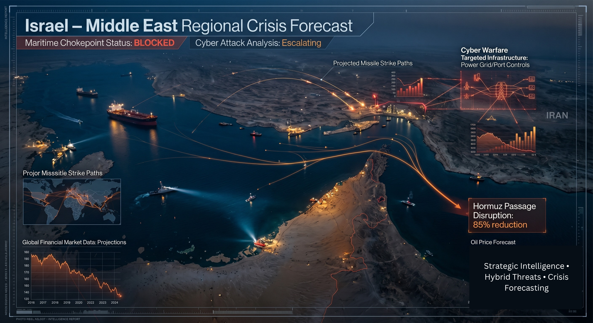
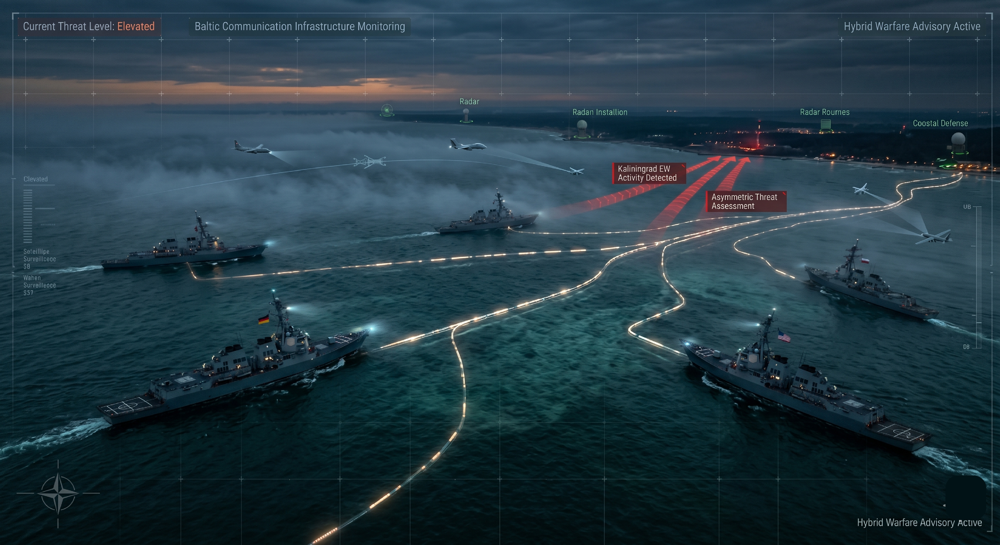
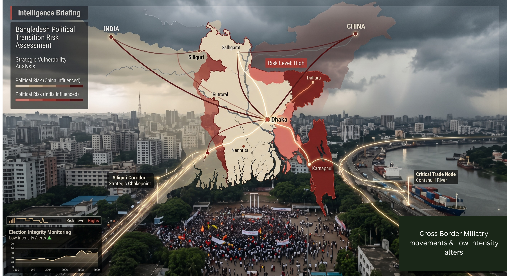
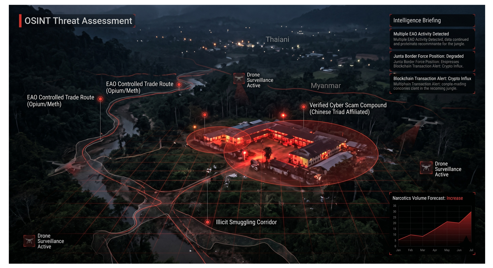

Geopolitical Risk & OSINT Researcher
Hi, I'm Daksh. As a self-taught geopolitical analyst, I don't just follow international relations. I reverse engineer it. I deep-dive into regional flashpoints, synthesizing fragmented geopolitical signals into structured, actionable risk assessments to forecast the macro trends that shape global security and strategic advisory for high-stakes decision-makers.
About Me
I am drawn to geopolitical risk analysis out of a genuine and persistent fascination with diplomacy and the mechanics of global power. I do not just enjoy reading about international relations; I have a natural need to dissect and understand it deeply. What has always attracted me most is the analytical challenge itself, taking messy, scattered, and often contradictory realities from fragile or unstable regions and making sense of them in a structured way.
I naturally gravitate toward organizing chaos, which is why my approach relies heavily on structuring open-source information and applying clear analytical frameworks. For me, this field sits at the perfect intersection of my passion for global strategy and my drive to identify the real signal hidden within the noise.
Core Competencies
Data Structuring & Taxonomy
Developing strict classification schemas, building structured incident datasets, and organizing fragmented multi-source intelligence.
Corporate Risk & Supply Chain
Evaluating political volatility, mapping localized unrest tripwires, and identifying supply chain vulnerabilities for enterprise continuity.
Intelligence Collection (OSINT)
Advanced open-source and SOCMINT gathering, tracking non-kinetic hybrid threats, and real-time monitoring of fragile states.
Strategic Forecasting & Tradecraft
Strict adherence to ICD-203 standards, PMESII frameworks, divergent scenario planning, and producing tactical executive briefs.
Strategic Assessments
Israel-Middle East Crisis Forecast

Developed a 6-month strategic forecast analyzing the US-Iran ceasefire and leadership transition. Identifies energy shocks and maritime logistics paralysis.
Baltic Maritime Hybrid Threat Analysis

Comprehensive risk assessment evaluating non-kinetic threats targeting undersea communications and energy assets. Built a structured dataset of 15+ incidents.
Bangladesh Political Transition Tripwires

Tactical assessment mapping localized unrest and security implications following political volatility. Establishing early-warning indicators for continuity.
Myanmar Conflict Trajectory Analysis

Tactical assessment designed to evaluate supply chain vulnerabilities amid regional instability, organizing fragmented intelligence into actionable forecasts.